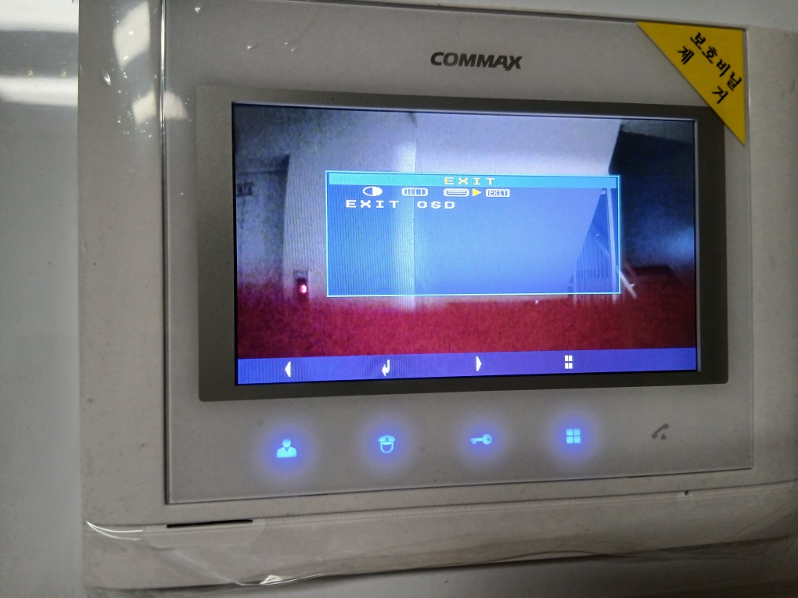

송파구 문정동·잠실 비디오폰 교체 수리 및 월패드 연동 설치 · 코맥스·코콤·삼성 호환 시공



· 현장 증상: 송파구 문정동 세대 내 구형 비디오폰·월패드 노후로 인한 화면 불량, 호출 통화 잡음, 1층 로비폰 및 현관 도어락 문열림 연동 불가 상태
· 작업 내용: 기존 매립 박스 타공 흔적을 가리는 전용 마감판 정밀 시공 후 단지 통신 방식에 맞춘 신형 호환 비디오폰 교체 설치 완료. 코맥스 비디오폰 교체 수리, 코콤 비디오폰 교체 설치, 삼성 월패드 교체 연동, 경동나비엔·현대통신 호환 시공은 물론, 무선 문열림 송·수신기 추가 연동으로 거실 월패드에서 1층 공동현관과 현관 도어락을 모두 원격 제어하도록 세팅 완료
· 송파구 전지역 출장 권역: 송파구 문정동·잠실동·가락동·장지동·신천동·방이동·오금동·거여동·마천동·석촌동·삼전동·송파동·풍납동 전지역 비디오폰 교체·수리·연동, 월패드 교체 수리, 도어락 문열림 연동 당일 출장 시공
문의: 010-7724-5425 (사진 1장 간편 견적)
동일 시공 견적 신청하기 →